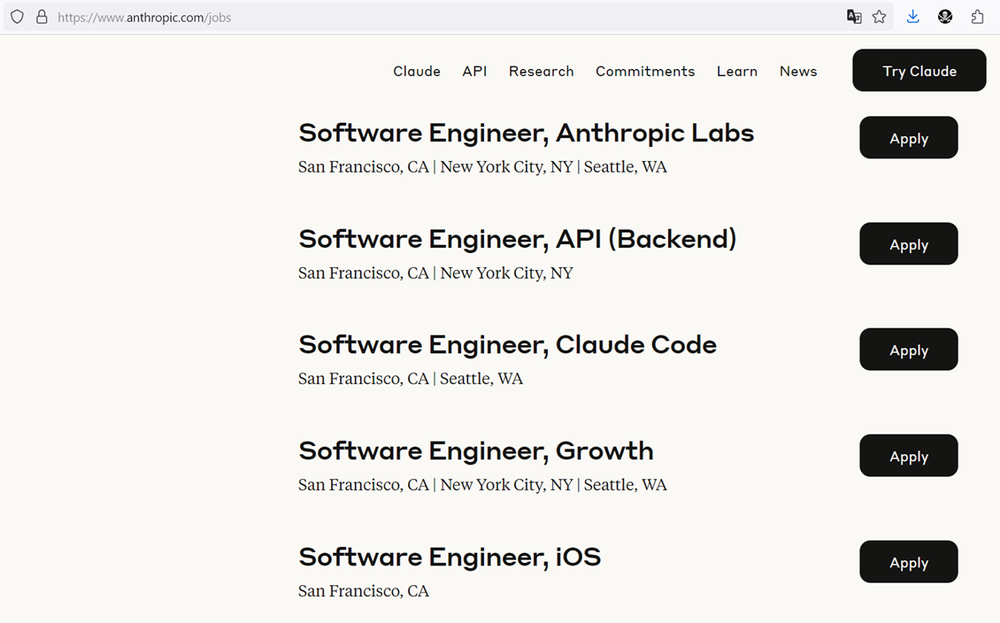

Will AI Replace Developers?
A common narrative from OpenAI and similar companies (previous hype was from no-code-guys) suggests that the era of human developers is ending due to cost considerations, and that AI will replace us soon.
Check out this talk from the CEO of Anthropic, which occurred just one day before this article1:
And examine their actual hiring plans (Product, Infra, and Data Science). Notably, hiring for any senior or even staff position takes six months or more:

With around 150 open positions and a team of about 700, looks like Anthropic is gearing up for some serious growth, huh?
Draw your own conclusions. Oh, and by the way, they primarily write code in Go.
P.S. Pay close attention to Dario Amodei’s final answer regarding what it means to be human. It’s quite encouraging.
-
Note how my annotations and the embedded YouTube video with timestamp work effectively. ↩︎